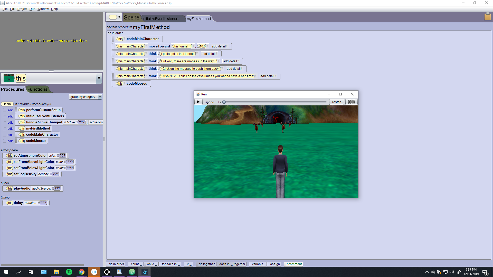
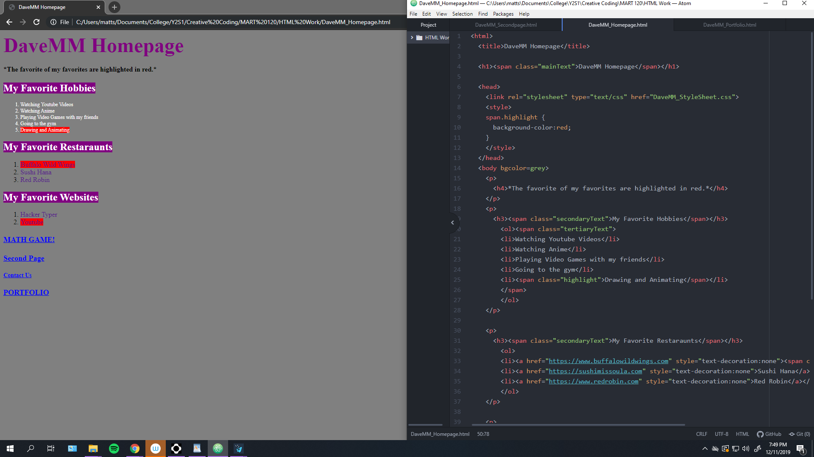
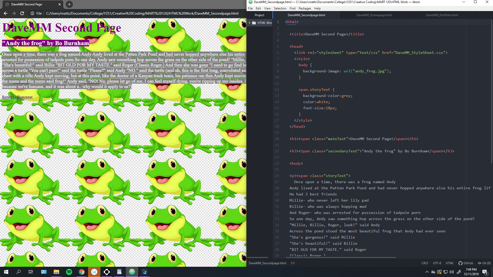
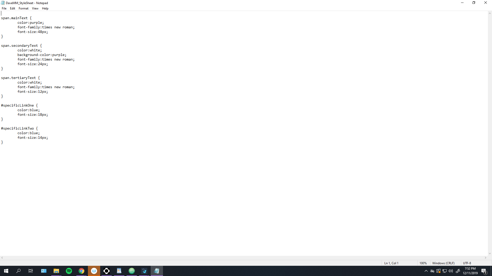
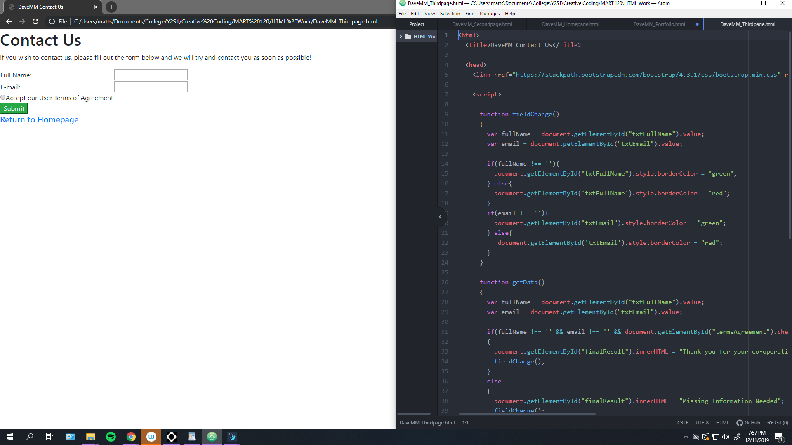
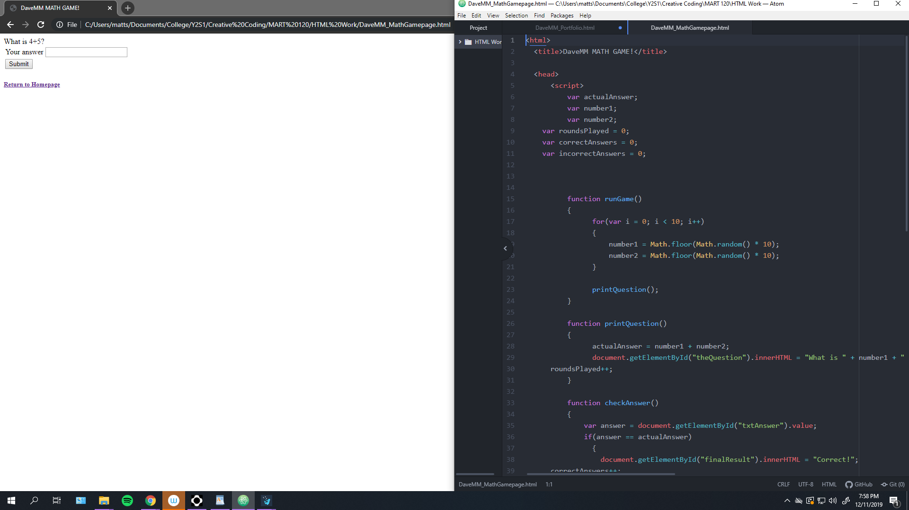
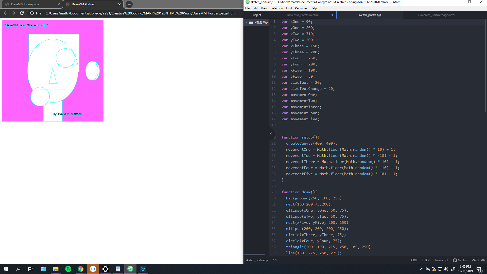
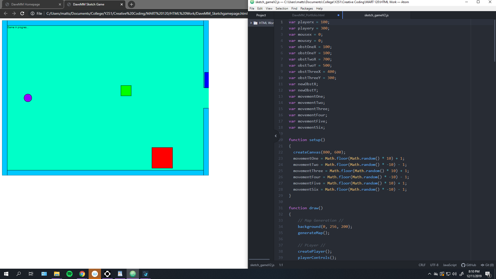
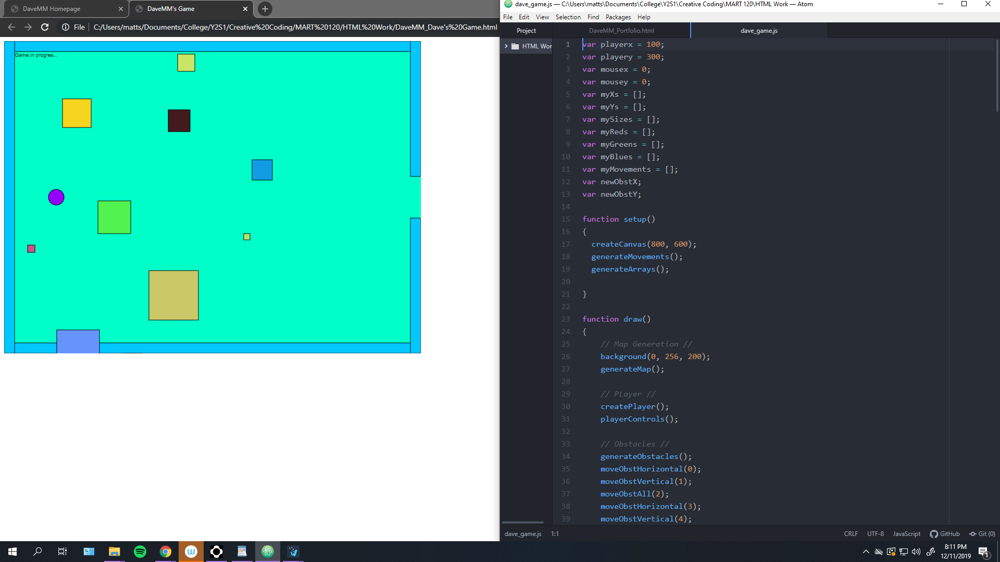

Although I do not have any screenshots from this era of the class, I do not really need any to explain what I had learned. We focused on the basic of coding and the problem solving associated with it. The first softwares we used mainly focused on using visual language to code. We used stuff like scratch and code.org. Overall It was a vey simple yet great time.
Here is a screenshot of the game I made in the visual coding software Alice. I called it Mooses on the Looses and it is absolutely ridiculous. I actually recorded my own Moose sound using my mic and it sound "great". This project presented the ideas of functions without me even realizing it, and it was a blast to make this game.
These weeks were focused on the creation and stylization of websites. I was familiar with html code due to me taking a coding class in high school. However, I had a lot of fun using a style sheet to make my websites look the way they do.
  During the eighth week we added javascript functionalities to our websites. This was when stuff personally started to get more challenging. But I learned this week that there are a lot of resources to help with coding online. I also experimented with how funstions worked and was able to solve a lot of the problems presented by the code. Functions are actually pretty cool!
 This is where things started to get cool! I was really happy that I was able to get the shapes to move in a very fluid fashion. Playing with loops made this week really interesting and presented a lot of fun times.
These final weeks were definitely the most enjoyable. I had a blast figuring out how to make a player character move around. Moreover, I loved developing different obstactles and allowing them to move around at random speeds. However, I had some frustration during week 12, because I was trying to challenge myself a little. I was trying to make many obstacles from a single function, and I was trying to make it so all of the colors would be random but not ever changing. I was relieved and slightly jaded when we learned how t odo it the following week even though I had spent hours trying to d oit the week prior. But in the end I mastered arrays and was incredibly proud of the final project I made. I wish collision detection ould have been explored, but the again it seems like that would have taken a few weeks on its own. In the end it was a great tiem and I a mproud of the work I made.
 This semester was incredibly enlightnoing and a fun challenge. I always enjoy having my critical thinking skills beign challenged. I definitely learned a lot about coding this semester and it has definitely opened my eyes to the art of coding.